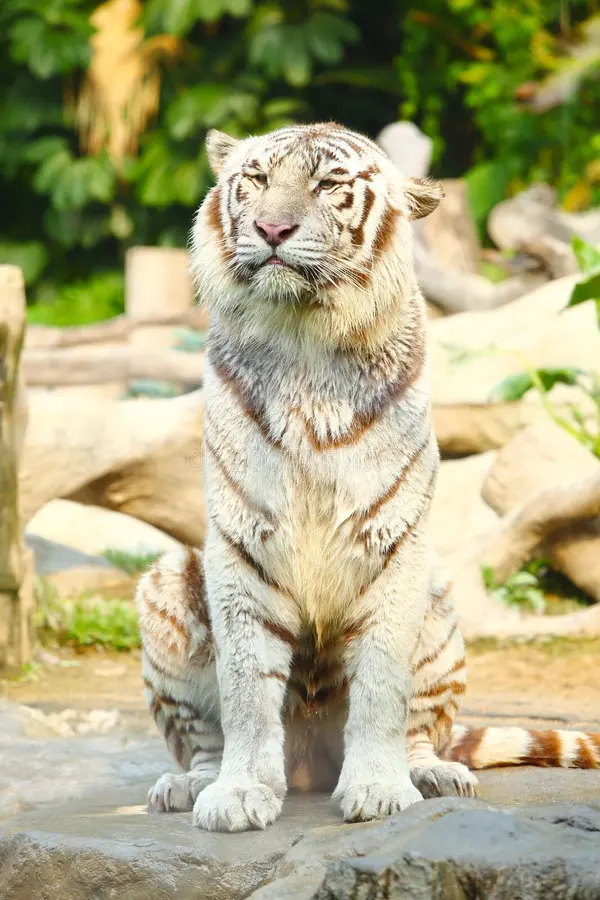
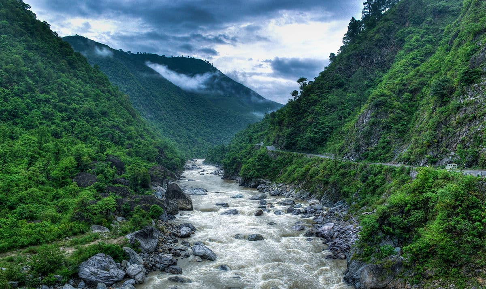
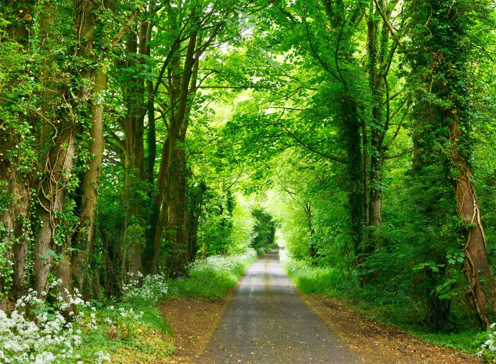
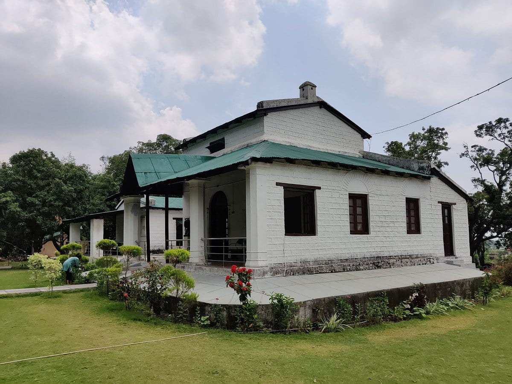
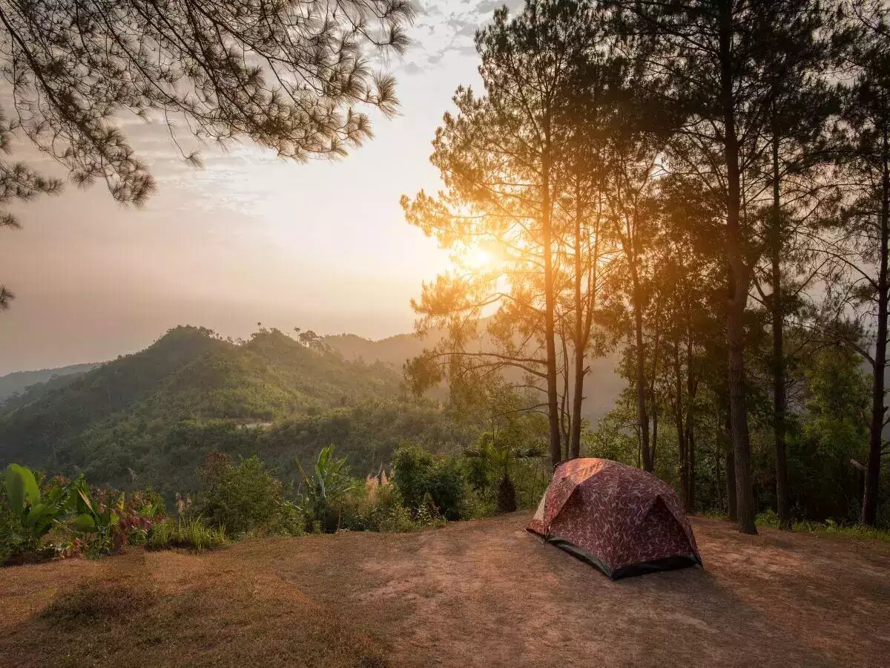
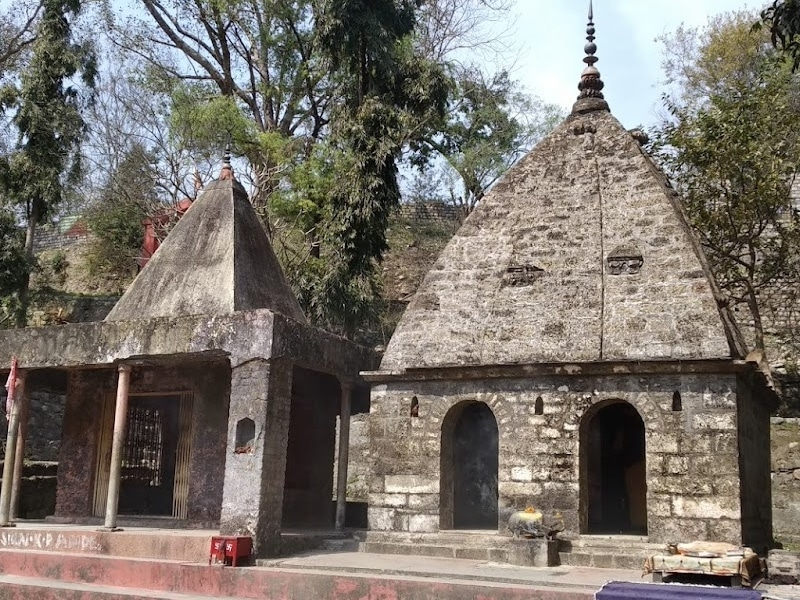

Speciality Of Sundarbans National Parks:
Tigers
The Sundarbans is of universal importance for globally endangered species including the Royal Bengal Tiger,
Ganges and Irawadi dolphins, estuarine crocodiles and the critically endangered endemic river terrapin
(Batagur baska). It is the only mangrove habitat in the world for Panthera tigris tigris species.
The Sunderban National Park offers a unique and exhilarating wildlife habitat. The legendary Bengal
tiger is one of the star highlights of the park. This National reserve is home to many crabs, fishes,
and reptiles because of the mangroves surrounding it

Wellcome To Sundarbans National Park ‚ú®üêæ

You Didn‚Äôt Know üòâ!
World's Largest Coastal Mangrove Forest: The Sundarbans encompasses the world's largest coastal
mangrove forest, spreading over approximately 10,000 square kilometers. This unique ecosystem is
shared between India and Bangladesh, with about 4,000 square kilometers located in India..
Sundarbans National Park in Assam, India, has many animals. Here are some of the animals in the
park:
-
Indian rhinoceroses
The park has the largest population of the world's Greater Indian One-Horned Rhinoceroses. As of
2022, the 2022 census estimated the population at 2,613.
-
It's one of the last areas in eastern India that's undisturbed by humans.
-
It's a UNESCO World Heritage Site
-
It's home to the world's largest population of one-horned rhinoceroses, with 2,401 in 2015.
-
It's also home to tigers, elephants, panthers, bears, wild water buffalo, swamp deer, and
thousands of birds.
Here are some incidents that occurred in Jim Corbett National Park which will surprise you.
-
Indian rhinoceroses ü¶è
The park has the largest population of the world's Greater Indian One-Horned Rhinoceroses. As of
2022, the 2022 census estimated the population at 2,613..
-
Buffalo üêÉ
The park has 1,666 wild water buffalo.
-
Elephants üêò
The park has large breeding populations of elephants
-
Swamp deer ü¶å
The park has large breeding populations of swamp deer.
-
Other animals üêæ
The park also has 35 mammalian species, including reticulated python, Indian rock python, king
cobra, Indian cobra, monocled cobra, Russell's viper, and common krait..
 Monsoon
23° To 34° Jul, Aug, Sep
Monsoon
23° To 34° Jul, Aug, Sep
The rainy season is not the best time to go to Jim Corbett. The monsoon
season spans from June to September, and when it rains, it pours. The Jim Corbett park receives
torrential rainfall and sweeps away the safari tracks, making many zones inaccessible. Hence,
the national park is shut during the rainy season.
 Winter
10° To 28° Nov, Dec, Jan, Feb
Winter
10° To 28° Nov, Dec, Jan, Feb
This is the best time to go to Jim Corbett. The forest is a vivid shade of
green, the birds are chirping, and the animals are basking in a pleasant atmosphere. The gates
are ready to open for enthusiastic visitors and the staff is pumped to usher you around the
beautiful park in the cool weather.
 Summer
28° To 45° Mar, Apr, May Jun
Summer
28° To 45° Mar, Apr, May Jun
Summer at the park ranges from April to early June and the temperatures
climbs up to 40 °C. It is hot, but for most Indians this is the best time to visit.
These are the months when schools are shut and summer holidays are on. The best way
to educate the future generation is to offer a first-hand experience of animals and birds in
their natural surroundings.

The Kosi River
Kosi River is famous for indulging in river rafting sport, one of the best things to do in Jim Corbett.
But more than that, it is a significant water source for most animal & bird species who visit here to
quench their thirst. This river is the secondary source for them since, during the summer season, the
Ramganga River dries up. Besides river rafting, Kosi River is a famous spot for adventure activities
like river crossing, fishing, & bird watching.
Location

Sitabani Forest
Sitabani Forest is an ideal retreat for birdwatchers who can spot many different bird
species, including
vultures, & migratory birds. You can enjoy the jungle safari throughout the year, as this forest does
not fall inside the zone of Corbett National Park. Hence, this gives you an advantage to get direct
approval from the entry gate of Sitabani Forest. Visiting this forest during the morning hours will let
you spot multiple birds & animals like wild boar, elephants, deer, jackals, or, if lucky, can also spot
tigers or leopards roaming across.
Location

Corbett Falls
Those interested in beholding the sight of cascading waterfalls should visit Jim Corbett to witness the
beautiful view of Corbett Falls, encircled by dense teak forests, bringing more addition to its natural
beauty. But it is cautioned to avoid entering the below-water pool, as it may have the presence of
snakes & crocodiles. You can take a bus or a taxi to reach this waterfall.
Location

Corbett Museum
If you have a great interest in paintings & sketches, then you should visit the Corbett Museum, known to
have been the home of man-eater hunter turned conservationist Jim Corbett. Located in Kaladhungi, Chhoti
Haldwani, in Uttarakhand, this museum is actually a heritage bungalow of Jim Corbett, where you can see
his personal belongings, including his cap, gun, fishnet, paintings, sketches, & articles penned by him.
Location

Kyari Camp
Last on the list is Kyari Camp. It is a unique camping site where you will get a typical feeling of rural
life without electricity. However, at night, solar lanterns & kerosene are provided to light the whole
place. In the morning, you can experience many recreational activities like nature trails, vegetable
sowing on farms, rappelling across waterfalls, diving in river pools, & even rock climbing. So overall,
it will give you a memorable village experience.
Location

Sitabani Temple
The name of this temple will surely give you an idea of whom this holy spot is dedicated to. Yes, it is
none other than Sita from Ramayana. It is one of the famous religious tourist destinations that brings
tourist footfall to Jim Corbett. According to a mythological fact, it is that place where Sita, the wife
of Lord Rama, spent her days during her Agnipariksha ritual.
Location